Summary
This experiment investigates ids signature tuning. Latin Hypercube exploration of 4 IDS parameters for detection accuracy and packet drop rate.
The design varies 4 factors: signature pool size (sigs), ranging from 1000 to 50000, pattern match depth (bytes), ranging from 256 to 4096, stream reassembly depth (bytes), ranging from 4096 to 65536, and pcap buffer mb (MB), ranging from 64 to 1024. The goal is to optimize 2 responses: detection accuracy pct (%) (maximize) and packet drop rate (%) (minimize). Fixed conditions held constant across all runs include ids engine = suricata, ruleset = et_open.
Latin Hypercube Sampling was used to space 10 runs across the 4-dimensional factor space with good coverage and minimal gaps, making it ideal for computer experiments where the response surface may be complex.
Key Findings
For detection accuracy pct, the most influential factors were signature pool size (25.0%), pattern match depth (25.0%), stream reassembly depth (25.0%). The best observed value was 88.0 (at signature pool size = 30849.8, pattern match depth = 2741.25, stream reassembly depth = 49408).
For packet drop rate, the most influential factors were signature pool size (25.0%), pattern match depth (25.0%), stream reassembly depth (25.0%). The best observed value was -0.53 (at signature pool size = 24546.1, pattern match depth = 1259.3, stream reassembly depth = 29374.6).
Recommended Next Steps
- Consider whether any fixed factors should be varied in a future study.
Experimental Setup
Factors
| Factor | Low | High | Unit |
|---|
signature_pool_size | 1000 | 50000 | sigs |
pattern_match_depth | 256 | 4096 | bytes |
stream_reassembly_depth | 4096 | 65536 | bytes |
pcap_buffer_mb | 64 | 1024 | MB |
Fixed: ids_engine = suricata, ruleset = et_open
Responses
| Response | Direction | Unit |
|---|
detection_accuracy_pct | ↑ maximize | % |
packet_drop_rate | ↓ minimize | % |
Configuration
{
"metadata": {
"name": "IDS Signature Tuning",
"description": "Latin Hypercube exploration of 4 IDS parameters for detection accuracy and packet drop rate"
},
"factors": [
{
"name": "signature_pool_size",
"levels": [
"1000",
"50000"
],
"type": "continuous",
"unit": "sigs"
},
{
"name": "pattern_match_depth",
"levels": [
"256",
"4096"
],
"type": "continuous",
"unit": "bytes"
},
{
"name": "stream_reassembly_depth",
"levels": [
"4096",
"65536"
],
"type": "continuous",
"unit": "bytes"
},
{
"name": "pcap_buffer_mb",
"levels": [
"64",
"1024"
],
"type": "continuous",
"unit": "MB"
}
],
"fixed_factors": {
"ids_engine": "suricata",
"ruleset": "et_open"
},
"responses": [
{
"name": "detection_accuracy_pct",
"optimize": "maximize",
"unit": "%"
},
{
"name": "packet_drop_rate",
"optimize": "minimize",
"unit": "%"
}
],
"settings": {
"operation": "latin_hypercube",
"test_script": "use_cases/63_ids_signature_tuning/sim.sh"
}
}
Experimental Matrix
The Latin Hypercube Design produces 10 runs. Each row is one experiment with specific factor settings.
| Run | signature_pool_size | pattern_match_depth | stream_reassembly_depth | pcap_buffer_mb |
|---|
| 1 | 34621.4 | 2790.93 | 20920.8 | 675.961 |
| 2 | 48884.1 | 3802.03 | 37336.4 | 862.441 |
| 3 | 45096.6 | 1453.21 | 60938.9 | 241.455 |
| 4 | 9426.61 | 1003 | 34208 | 611.509 |
| 5 | 27158.8 | 1127.72 | 45358.4 | 256.202 |
| 6 | 35490.9 | 3628.13 | 27442.3 | 153.926 |
| 7 | 11902.2 | 551.344 | 9044.1 | 527.087 |
| 8 | 17536 | 3176.57 | 15185.7 | 419.436 |
| 9 | 24339.7 | 2137.84 | 52493.7 | 930.087 |
| 10 | 5143.48 | 2306.78 | 58460.4 | 830.826 |
Step-by-Step Workflow
1
Preview the design
$ doe info --config use_cases/63_ids_signature_tuning/config.json
2
Generate the runner script
$ doe generate --config use_cases/63_ids_signature_tuning/config.json \
--output use_cases/63_ids_signature_tuning/results/run.sh --seed 42
3
Execute the experiments
$ bash use_cases/63_ids_signature_tuning/results/run.sh
4
Analyze results
$ doe analyze --config use_cases/63_ids_signature_tuning/config.json
5
Get optimization recommendations
$ doe optimize --config use_cases/63_ids_signature_tuning/config.json
6
Multi-objective optimization
With 2 competing responses, use --multi to find the best compromise via Derringer–Suich desirability.
$ doe optimize --config use_cases/63_ids_signature_tuning/config.json --multi
7
Generate the HTML report
$ doe report --config use_cases/63_ids_signature_tuning/config.json \
--output use_cases/63_ids_signature_tuning/results/report.html
Features Exercised
| Feature | Value |
|---|
| Design type | latin_hypercube |
| Factor types | continuous (all 4) |
| Arg style | double-dash |
| Responses | 2 (detection_accuracy_pct ↑, packet_drop_rate ↓) |
| Total runs | 10 |
Analysis Results
Generated from actual experiment runs using the DOE Helper Tool.
Response: detection_accuracy_pct
Top factors: signature_pool_size (25.0%), pattern_match_depth (25.0%), stream_reassembly_depth (25.0%).
ANOVA
| Source | DF | SS | MS | F | p-value |
|---|
| Source | DF | SS | MS | F | p-value |
| signature_pool_size | 9 | 82.5200 | 9.1689 | | |
| pattern_match_depth | 9 | 82.5200 | 9.1689 | | |
| stream_reassembly_depth | 9 | 82.5200 | 9.1689 | | |
| pcap_buffer_mb | 9 | 82.5200 | 9.1689 | | |
| Error | (Lenth | PSE) | 0 | 0.0000 | 0.0000 |
| Total | 9 | 82.5200 | 9.1689 | | |
Pareto Chart
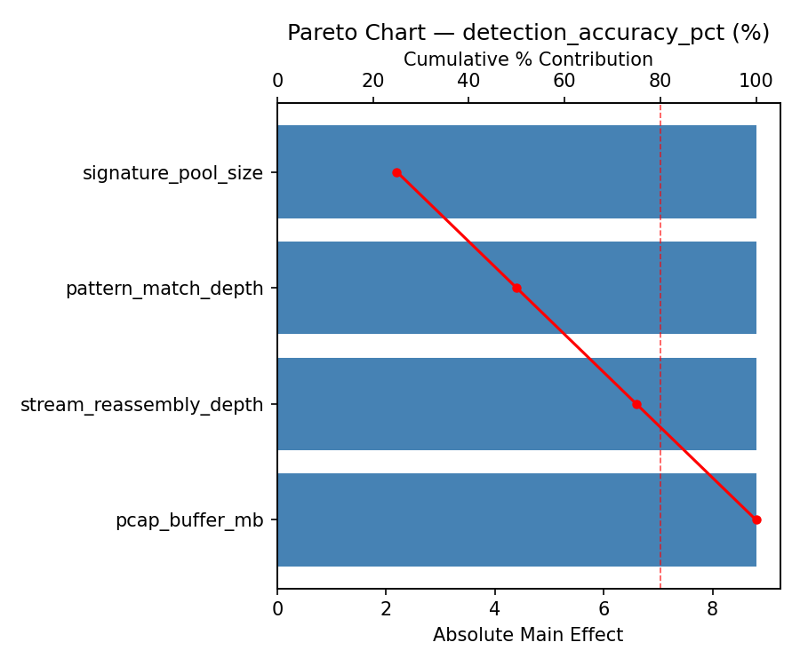
Main Effects Plot

Normal Probability Plot of Effects
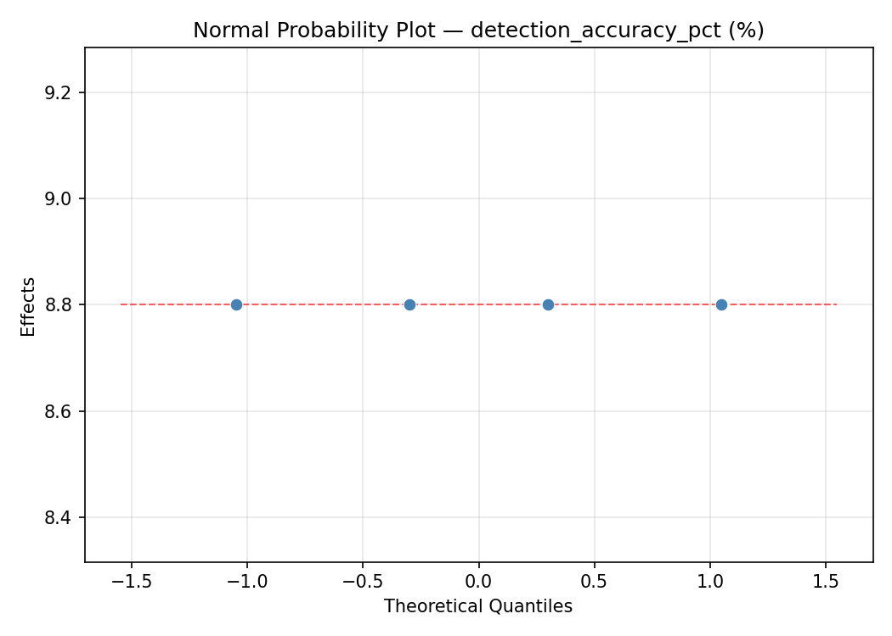
Half-Normal Plot of Effects
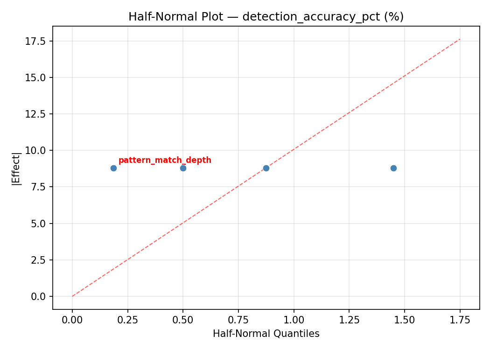
Model Diagnostics
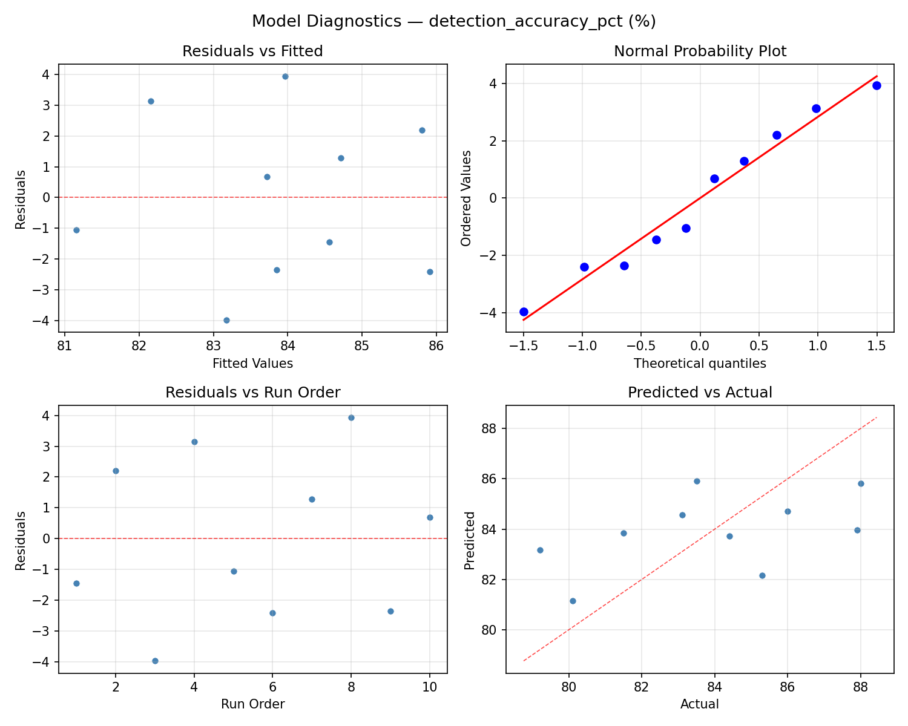
Response: packet_drop_rate
Top factors: signature_pool_size (25.0%), pattern_match_depth (25.0%), stream_reassembly_depth (25.0%).
ANOVA
| Source | DF | SS | MS | F | p-value |
|---|
| Source | DF | SS | MS | F | p-value |
| signature_pool_size | 9 | 117.2040 | 13.0227 | | |
| pattern_match_depth | 9 | 117.2040 | 13.0227 | | |
| stream_reassembly_depth | 9 | 117.2040 | 13.0227 | | |
| pcap_buffer_mb | 9 | 117.2040 | 13.0227 | | |
| Error | (Lenth | PSE) | 0 | 0.0000 | 0.0000 |
| Total | 9 | 117.2040 | 13.0227 | | |
Pareto Chart

Main Effects Plot

Normal Probability Plot of Effects
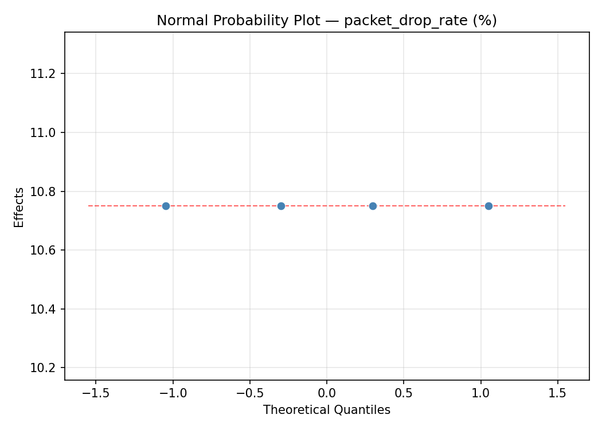
Half-Normal Plot of Effects
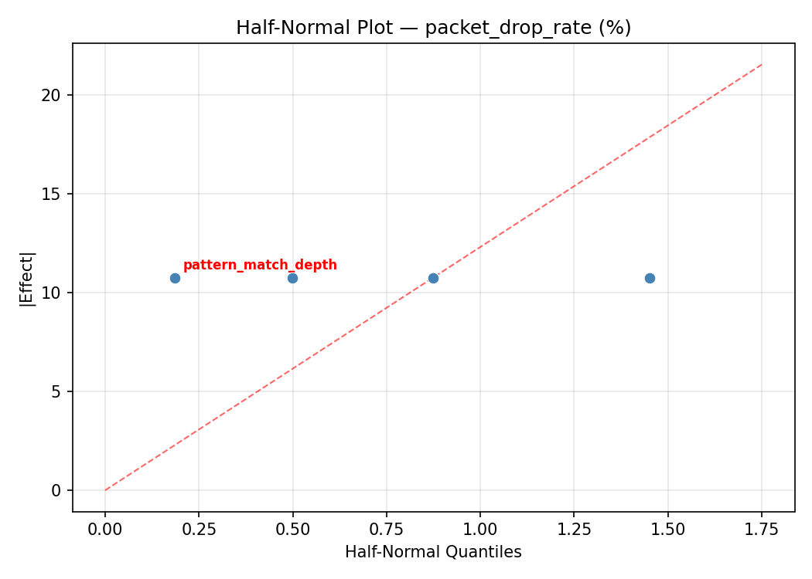
Model Diagnostics
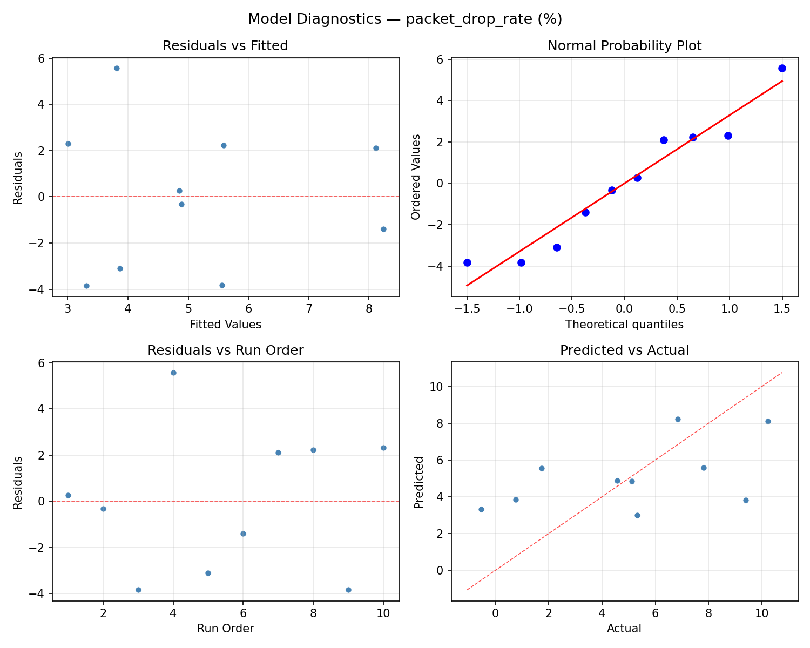
Response Surface Plots
3D surfaces fitted with quadratic RSM. Red dots are observed data points.
detection accuracy pct pattern match depth vs pcap buffer mb
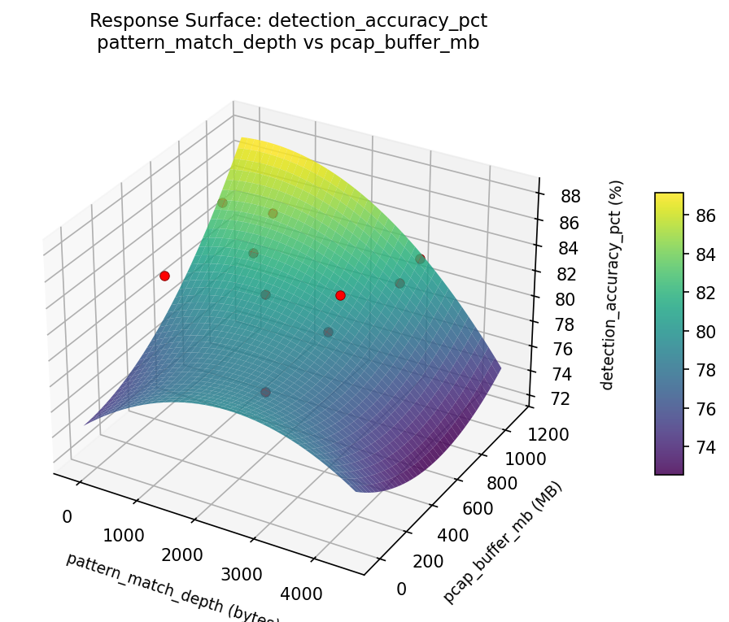
detection accuracy pct pattern match depth vs stream reassembly depth
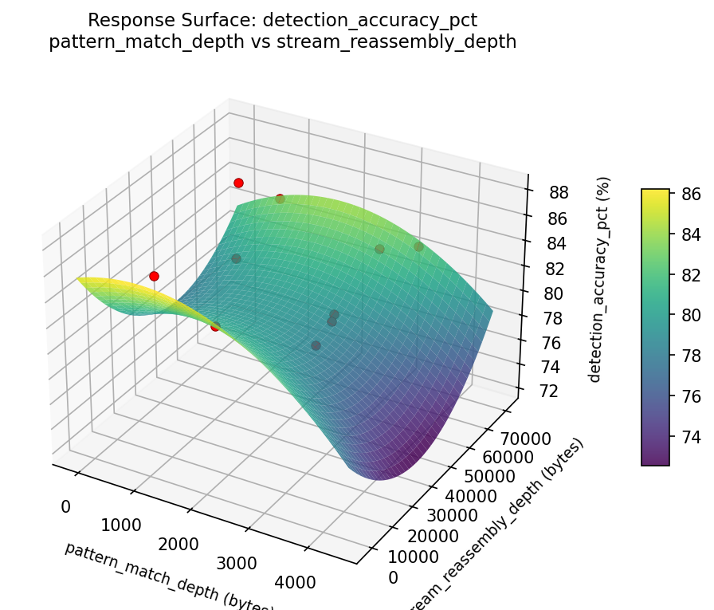
detection accuracy pct signature pool size vs pattern match depth

detection accuracy pct signature pool size vs pcap buffer mb

detection accuracy pct signature pool size vs stream reassembly depth

detection accuracy pct stream reassembly depth vs pcap buffer mb
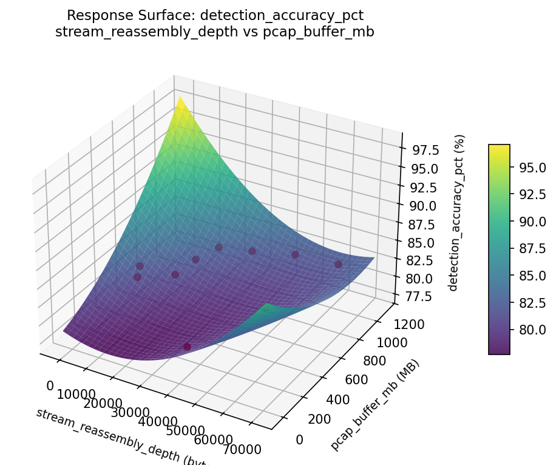
packet drop rate pattern match depth vs pcap buffer mb

packet drop rate pattern match depth vs stream reassembly depth

packet drop rate signature pool size vs pattern match depth

packet drop rate signature pool size vs pcap buffer mb
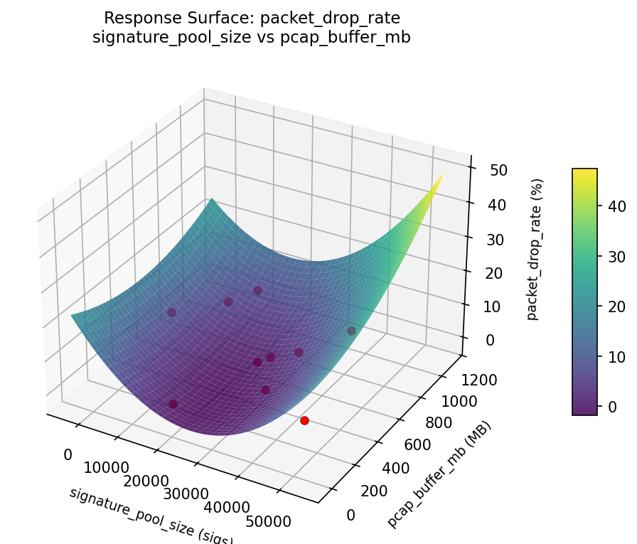
packet drop rate signature pool size vs stream reassembly depth

packet drop rate stream reassembly depth vs pcap buffer mb

Multi-Objective Optimization
When responses compete, Derringer–Suich desirability finds the best compromise.
Each response is scaled to a 0–1 desirability, then combined via a weighted geometric mean.
Overall Desirability
D = 0.7505
Per-Response Desirability
| Response | Weight | Desirability | Predicted | Dir |
|---|
detection_accuracy_pct |
1.5 |
|
88.00 0.9545 88.00 % |
↑ |
packet_drop_rate |
1.0 |
|
4.57 0.5233 4.57 % |
↓ |
Recommended Settings
| Factor | Value |
|---|
signature_pool_size | 25952.7 sigs |
pattern_match_depth | 303.845 bytes |
stream_reassembly_depth | 41224.5 bytes |
pcap_buffer_mb | 950.427 MB |
Source: from observed run #2
Trade-off Summary
Sacrifice = how much worse than single-objective best.
| Response | Predicted | Best Observed | Sacrifice |
|---|
packet_drop_rate | 4.57 | -0.53 | +5.10 |
Top 3 Runs by Desirability
| Run | D | Factor Settings |
|---|
| #8 | 0.5542 | signature_pool_size=22000, pattern_match_depth=807.183, stream_reassembly_depth=23248.4, pcap_buffer_mb=288.293 |
| #10 | 0.5300 | signature_pool_size=10807.9, pattern_match_depth=4095.97, stream_reassembly_depth=31121.2, pcap_buffer_mb=215.217 |
Model Quality
| Response | R² | Type |
|---|
packet_drop_rate | 0.6225 | linear |
Full Multi-Objective Output
============================================================
MULTI-OBJECTIVE OPTIMIZATION
Method: Derringer-Suich Desirability Function
============================================================
Overall desirability: D = 0.7505
Response Weight Desirability Predicted Direction
---------------------------------------------------------------------
detection_accuracy_pct 1.5 0.9545 88.00 % ↑
packet_drop_rate 1.0 0.5233 4.57 % ↓
Recommended settings:
signature_pool_size = 25952.7 sigs
pattern_match_depth = 303.845 bytes
stream_reassembly_depth = 41224.5 bytes
pcap_buffer_mb = 950.427 MB
(from observed run #2)
Trade-off summary:
detection_accuracy_pct: 88.00 (best observed: 88.00, sacrifice: +0.00)
packet_drop_rate: 4.57 (best observed: -0.53, sacrifice: +5.10)
Model quality:
detection_accuracy_pct: R² = 0.4022 (linear)
packet_drop_rate: R² = 0.6225 (linear)
Top 3 observed runs by overall desirability:
1. Run #2 (D=0.7505): signature_pool_size=25952.7, pattern_match_depth=303.845, stream_reassembly_depth=41224.5, pcap_buffer_mb=950.427
2. Run #8 (D=0.5542): signature_pool_size=22000, pattern_match_depth=807.183, stream_reassembly_depth=23248.4, pcap_buffer_mb=288.293
3. Run #10 (D=0.5300): signature_pool_size=10807.9, pattern_match_depth=4095.97, stream_reassembly_depth=31121.2, pcap_buffer_mb=215.217
Full Analysis Output
=== Main Effects: detection_accuracy_pct ===
Factor Effect Std Error % Contribution
--------------------------------------------------------------
signature_pool_size 8.8000 0.9575 25.0%
pattern_match_depth 8.8000 0.9575 25.0%
stream_reassembly_depth 8.8000 0.9575 25.0%
pcap_buffer_mb 8.8000 0.9575 25.0%
=== ANOVA Table: detection_accuracy_pct ===
Source DF SS MS F p-value
-----------------------------------------------------------------------------
signature_pool_size 9 82.5200 9.1689
pattern_match_depth 9 82.5200 9.1689
stream_reassembly_depth 9 82.5200 9.1689
pcap_buffer_mb 9 82.5200 9.1689
Error (Lenth PSE) 0 0.0000 0.0000
Total 9 82.5200 9.1689
Note: Error estimated using Lenth's pseudo-standard-error (unreplicated design)
=== Summary Statistics: detection_accuracy_pct ===
signature_pool_size:
Level N Mean Std Min Max
------------------------------------------------------------
15594.3 1 87.9000 0.0000 87.9000 87.9000
20428.9 1 81.5000 0.0000 81.5000 81.5000
23218.1 1 88.0000 0.0000 88.0000 88.0000
26523.6 1 84.4000 0.0000 84.4000 84.4000
3005.71 1 80.1000 0.0000 80.1000 80.1000
31721.2 1 85.3000 0.0000 85.3000 85.3000
35406 1 79.2000 0.0000 79.2000 79.2000
41882.7 1 83.1000 0.0000 83.1000 83.1000
45531.6 1 83.5000 0.0000 83.5000 83.5000
7150.12 1 86.0000 0.0000 86.0000 86.0000
pattern_match_depth:
Level N Mean Std Min Max
------------------------------------------------------------
1337.15 1 83.5000 0.0000 83.5000 83.5000
1707.08 1 84.4000 0.0000 84.4000 84.4000
1817.77 1 86.0000 0.0000 86.0000 86.0000
2488.12 1 79.2000 0.0000 79.2000 79.2000
2795.32 1 80.1000 0.0000 80.1000 80.1000
2977.58 1 81.5000 0.0000 81.5000 81.5000
3503.73 1 87.9000 0.0000 87.9000 87.9000
3871.69 1 83.1000 0.0000 83.1000 83.1000
637.14 1 88.0000 0.0000 88.0000 88.0000
755.907 1 85.3000 0.0000 85.3000 85.3000
stream_reassembly_depth:
Level N Mean Std Min Max
------------------------------------------------------------
12645.6 1 86.0000 0.0000 86.0000 86.0000
22502.6 1 80.1000 0.0000 80.1000 80.1000
25674.3 1 88.0000 0.0000 88.0000 88.0000
32083.4 1 83.5000 0.0000 83.5000 83.5000
39813.3 1 85.3000 0.0000 85.3000 85.3000
45457.6 1 83.1000 0.0000 83.1000 83.1000
47129 1 79.2000 0.0000 79.2000 79.2000
4922.71 1 81.5000 0.0000 81.5000 81.5000
55803.1 1 84.4000 0.0000 84.4000 84.4000
61562.7 1 87.9000 0.0000 87.9000 87.9000
pcap_buffer_mb:
Level N Mean Std Min Max
------------------------------------------------------------
111.574 1 81.5000 0.0000 81.5000 81.5000
186.063 1 79.2000 0.0000 79.2000 79.2000
294.705 1 83.5000 0.0000 83.5000 83.5000
429.818 1 86.0000 0.0000 86.0000 86.0000
505.972 1 85.3000 0.0000 85.3000 85.3000
608.405 1 83.1000 0.0000 83.1000 83.1000
731.083 1 87.9000 0.0000 87.9000 87.9000
823.505 1 84.4000 0.0000 84.4000 84.4000
914.542 1 88.0000 0.0000 88.0000 88.0000
946.611 1 80.1000 0.0000 80.1000 80.1000
=== Main Effects: packet_drop_rate ===
Factor Effect Std Error % Contribution
--------------------------------------------------------------
signature_pool_size 10.7500 1.1412 25.0%
pattern_match_depth 10.7500 1.1412 25.0%
stream_reassembly_depth 10.7500 1.1412 25.0%
pcap_buffer_mb 10.7500 1.1412 25.0%
=== ANOVA Table: packet_drop_rate ===
Source DF SS MS F p-value
-----------------------------------------------------------------------------
signature_pool_size 9 117.2040 13.0227
pattern_match_depth 9 117.2040 13.0227
stream_reassembly_depth 9 117.2040 13.0227
pcap_buffer_mb 9 117.2040 13.0227
Error (Lenth PSE) 0 0.0000 0.0000
Total 9 117.2040 13.0227
Note: Error estimated using Lenth's pseudo-standard-error (unreplicated design)
=== Summary Statistics: packet_drop_rate ===
signature_pool_size:
Level N Mean Std Min Max
------------------------------------------------------------
15594.3 1 7.8100 0.0000 7.8100 7.8100
20428.9 1 1.7300 0.0000 1.7300 1.7300
23218.1 1 4.5700 0.0000 4.5700 4.5700
26523.6 1 5.3200 0.0000 5.3200 5.3200
3005.71 1 0.7600 0.0000 0.7600 0.7600
31721.2 1 9.3900 0.0000 9.3900 9.3900
35406 1 -0.5300 0.0000 -0.5300 -0.5300
41882.7 1 5.1200 0.0000 5.1200 5.1200
45531.6 1 6.8400 0.0000 6.8400 6.8400
7150.12 1 10.2200 0.0000 10.2200 10.2200
pattern_match_depth:
Level N Mean Std Min Max
------------------------------------------------------------
1337.15 1 6.8400 0.0000 6.8400 6.8400
1707.08 1 5.3200 0.0000 5.3200 5.3200
1817.77 1 10.2200 0.0000 10.2200 10.2200
2488.12 1 -0.5300 0.0000 -0.5300 -0.5300
2795.32 1 0.7600 0.0000 0.7600 0.7600
2977.58 1 1.7300 0.0000 1.7300 1.7300
3503.73 1 7.8100 0.0000 7.8100 7.8100
3871.69 1 5.1200 0.0000 5.1200 5.1200
637.14 1 4.5700 0.0000 4.5700 4.5700
755.907 1 9.3900 0.0000 9.3900 9.3900
stream_reassembly_depth:
Level N Mean Std Min Max
------------------------------------------------------------
12645.6 1 10.2200 0.0000 10.2200 10.2200
22502.6 1 0.7600 0.0000 0.7600 0.7600
25674.3 1 4.5700 0.0000 4.5700 4.5700
32083.4 1 6.8400 0.0000 6.8400 6.8400
39813.3 1 9.3900 0.0000 9.3900 9.3900
45457.6 1 5.1200 0.0000 5.1200 5.1200
47129 1 -0.5300 0.0000 -0.5300 -0.5300
4922.71 1 1.7300 0.0000 1.7300 1.7300
55803.1 1 5.3200 0.0000 5.3200 5.3200
61562.7 1 7.8100 0.0000 7.8100 7.8100
pcap_buffer_mb:
Level N Mean Std Min Max
------------------------------------------------------------
111.574 1 1.7300 0.0000 1.7300 1.7300
186.063 1 -0.5300 0.0000 -0.5300 -0.5300
294.705 1 6.8400 0.0000 6.8400 6.8400
429.818 1 10.2200 0.0000 10.2200 10.2200
505.972 1 9.3900 0.0000 9.3900 9.3900
608.405 1 5.1200 0.0000 5.1200 5.1200
731.083 1 7.8100 0.0000 7.8100 7.8100
823.505 1 5.3200 0.0000 5.3200 5.3200
914.542 1 4.5700 0.0000 4.5700 4.5700
946.611 1 0.7600 0.0000 0.7600 0.7600
Optimization Recommendations
=== Optimization: detection_accuracy_pct ===
Direction: maximize
Best observed run: #2
signature_pool_size = 30849.8
pattern_match_depth = 2741.25
stream_reassembly_depth = 49408
pcap_buffer_mb = 454.169
Value: 88.0
RSM Model (linear, R² = 0.7606, Adj R² = 0.5692):
Coefficients:
intercept +83.8336
signature_pool_size +1.9948
pattern_match_depth +4.2059
stream_reassembly_depth +1.7280
pcap_buffer_mb -1.8951
Predicted optimum (from linear model, at observed points):
signature_pool_size = 30849.8
pattern_match_depth = 2741.25
stream_reassembly_depth = 49408
pcap_buffer_mb = 454.169
Predicted value: 86.6829
Surface optimum (via L-BFGS-B, linear model):
signature_pool_size = 50000
pattern_match_depth = 4096
stream_reassembly_depth = 65536
pcap_buffer_mb = 64
Predicted value: 93.6575
Model quality: Good fit — general trends are captured, some noise remains.
Factor importance:
1. signature_pool_size (effect: 8.8, contribution: 25.0%)
2. pattern_match_depth (effect: 8.8, contribution: 25.0%)
3. stream_reassembly_depth (effect: 8.8, contribution: 25.0%)
4. pcap_buffer_mb (effect: 8.8, contribution: 25.0%)
=== Optimization: packet_drop_rate ===
Direction: minimize
Best observed run: #3
signature_pool_size = 24546.1
pattern_match_depth = 1259.3
stream_reassembly_depth = 29374.6
pcap_buffer_mb = 611.674
Value: -0.53
RSM Model (linear, R² = 0.7163, Adj R² = 0.4893):
Coefficients:
intercept +5.0647
signature_pool_size +1.3291
pattern_match_depth +5.3106
stream_reassembly_depth +1.4200
pcap_buffer_mb -1.4836
Predicted optimum (from linear model, at observed points):
signature_pool_size = 1579.76
pattern_match_depth = 3826.27
stream_reassembly_depth = 64577.9
pcap_buffer_mb = 723.168
Predicted value: 9.1536
Surface optimum (via L-BFGS-B, linear model):
signature_pool_size = 1000
pattern_match_depth = 256
stream_reassembly_depth = 4096
pcap_buffer_mb = 1024
Predicted value: -4.4786
Model quality: Good fit — general trends are captured, some noise remains.
Factor importance:
1. signature_pool_size (effect: 10.8, contribution: 25.0%)
2. pattern_match_depth (effect: 10.8, contribution: 25.0%)
3. stream_reassembly_depth (effect: 10.8, contribution: 25.0%)
4. pcap_buffer_mb (effect: 10.8, contribution: 25.0%)